Simple sim using a CAD model of the spacecraft to view the attitude.
Demonstrates control design using PIDMIMO, the Disturbances function, rigid body attitude dynamics with FRB, orbit dynamics with FOrbCart, and integration using RK4. The CAD model is viewed using DrawSCPlugIn.
Use the flags to turn on or off the disturbances and 3D viewing. If 3D viewing is off the demo concludes with a quaternion animation.
------------------------------------------------------------------------ See also DrawSCPlanPlugIn, PIDMIMO, AU2Q, AnimQ, QLVLH, QMult, QPose, Constant, NPlot, Plot2D, Plot3D, TimeGUI, RK4, JD2000, El2RV, Disturbances, SunV1, DrawSCPlugIn, Accel ------------------------------------------------------------------------
Contents
- Constants and globals
- Initial conditions
- Initialize the 3D window
- Plot every nPMax steps
- Plotting arrays
- Print the time to go message every nTTGo steps
- Spacecraft Inertias
- Design the control loops
- Initialize the control system
- Initialize the time display
- Initialize disturbances
- Run the simulation
- Plot results
%------------------------------------------------------------------------------- % Copyright 2003, 2006 Princeton Satellite Systems, Inc. All rights reserved. %------------------------------------------------------------------------------- % Since version 5.5 (2003) % 2016.1: update integration to use function handles %-------------------------------------------------------------------------------
Constants and globals
% Global for the TimeGUI %------------------------ global simulationAction simulationAction = ' '; clear e; % Flags - take values 0 or 1 %--------------------------- use3DGraphics = 1; useDisturbances = 1; % Constants %---------- degToRad = pi/180; radToDeg = 180/pi; % Spacecraft model %----------------- g = load('XYZSat'); ShowCAD( g ); % The control sampling period and the simulation integration time step %--------------------------------------------------------------------- tSamp = 0.5; % Number of sim steps %-------------------- nSim = 300;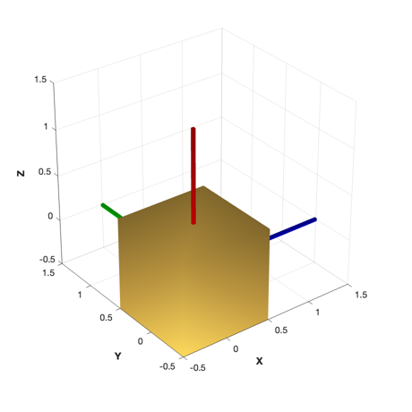
Initial conditions
%------------------- % q w x1 = [[1;0;0;0];[0;0;0]]; el = [Constant('earth radius mean')+15000 45*pi/180 0 0 0 0]; [r,v] = El2RV(el); x2 = [r;v]; dTSim = tSamp; mET = 0; jD = JD2000; roll = 0; pitch = 0; yaw = 0;
Initialize the 3D window
%------------------------- g(1).body(1).bHinge.q = x1(1:4); g(1).rECI = r; g(1).qLVLH = QLVLH( r, v ); g(1).name = 'XYZSat'; if( use3DGraphics ) tag3DWindow = DrawSCPlugIn( 'initialize', g, [], [], 'Earth', jD ); end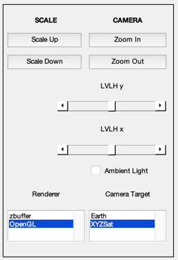 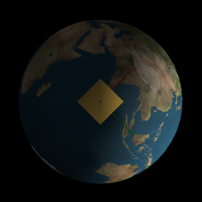
Plot every nPMax steps
%-----------------------
nP = 0;
kP = 0;
nPMax = 1;
nPlot = nSim/nPMax;
Plotting arrays
%----------------
x1Plot = zeros( 7,nPlot );
x2Plot = zeros( 6,nPlot );
tPlot = zeros( 1,nPlot );
TPlot = zeros( 3,nPlot );
FPlot = zeros( 3,nPlot );
Print the time to go message every nTTGo steps
%------------------------------------------------
nTTGo = 1000;
Spacecraft Inertias
-------------------
inr = g.mass.inertia; % can change inertia here invInr = inv(inr); tDist = [0;0;0]; % can add disturbances using this variable
Design the control loops
%------------------------- inr = 1; % inertia zeta = 1; % damping ratio omega = 0.1; % natural frequency tauInt = 100; % integrator time constant omegaR = 1; % derivative term roll-off frequency [a, b, c, d, k] = PIDMIMO( inr, zeta, omega, tauInt, omegaR, tSamp, 'Delta' );
Initialize the control system
%------------------------------ xRoll = [0;0]; xPitch = [0;0]; xYaw = [0;0]; qTarget = AU2Q( 30*pi/180, [1;0;0] ); % 30 degree rotation
Initialize the time display
%---------------------------- [ ratioRealTime, tToGoMem ] = TimeGUI( nSim, 0, [], 0, tSamp, 'XYZ Demo Sim' );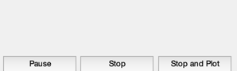
Initialize disturbances
%------------------------ e = Disturbances('defaults'); e.s = 1367*SunV1( jD, x2(1:3) ); % Watts/m^2 e.shadow = 0; e.units = 'm'; e.planet = 'Earth'; e.mu = 3.986014e5; e.computeAero = 1; if( useDisturbances ) hD = Disturbances( 'init', g, e ); end
Run the simulation
%------------------- for k = 1:nSim % Display the status message %--------------------------- [ ratioRealTime, tToGoMem ] = TimeGUI( nSim, k, tToGoMem, ratioRealTime, tSamp ); % --------------------------- % The Attitude Control System % --------------------------- % The attitude control loops % -------------------------- % torque = AttitudeControlLaw( params ); qTargetToBody = QPose( QMult( QPose(x1(1:4)), qTarget ) ); % Small angle convention %----------------------- angleError = -2*qTargetToBody(2:4); % Controller blocks, delta format. Each axis uses the same gains. %---------------------------------------------------------------- accel = zeros(3,1); accel(1) = c*xRoll + d*angleError(1); xRoll = xRoll + a*xRoll + b*angleError(1); accel(2) = c*xPitch + d*angleError(2); xPitch = xPitch + a*xPitch + b*angleError(2); accel(3) = c*xYaw + d*angleError(3); xYaw = xYaw + a*xYaw + b*angleError(3); torque = -g.mass.inertia*accel; % May add force here %------------------- force = [0;0;0]; % ------------- % Disturbances % ------------- g = SetCADQuaternion( g, x1(1:4) ); if( useDisturbances ) % Use disturbances model (uses CAD model) e.r = x2(1:3); e.v = x2(4:6); [f,t] = Disturbances('run',g,e,hD); fDist = f.total/1000; % to kN from N tDist = t.total; % already in Nm else % Alternatively, add periodic disturbance (faster) tDist = [1;0;0.5]*1e-3*sin(0.0011*mET); fDist = [0;0;0]; end % ------------------------------- % Update the equations of motion % ------------------------------- x1 = RK4(@FRB,x1,dTSim,mET,inr,invInr,torque+tDist); x2 = RK4(@FOrbCart,x2,dTSim,jD,[force+fDist]/g.mass.mass); mET = mET + dTSim; jD = jD + dTSim/86400; % -------------------- % Update the graphics % -------------------- if( use3DGraphics ) g(1) = SetCADState( g(1), x2(1:3), x2(4:6) ); DrawSCPlugIn( 'update spacecraft', tag3DWindow, g, jD ); end % Plotting % -------- if (nP == 0) kP = kP + 1; x1Plot(:,kP) = x1; x2Plot(:,kP) = x2; tPlot(:,kP) = mET; TPlot(:,kP) = torque; FPlot(:,kP) = force; nP = nPMax - 1; else nP = nP - 1; end % Time control %------------- switch simulationAction case 'pause' pause simulationAction = ' '; case 'stop' return; case 'plot' break; end end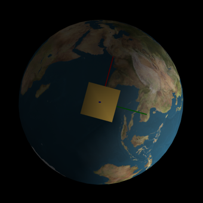 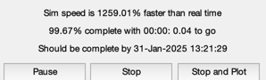 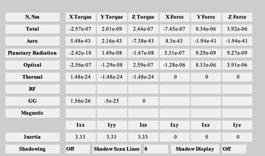
Plot results
TimeGUI('close'); j = 1:kP; tPlot = tPlot(j); Plot2D(tPlot,x1Plot( 1:4,j),'Time (sec)',['Q_s';'Q_x';'Q_y';'Q_z'],'Quaternion') Plot2D(tPlot,x1Plot( 5:7,j),'Time (sec)',['\omega_x';'\omega_y';'\omega_z'],'Body Rates') Plot2D(tPlot,x2Plot( 1:3,j),'Time (sec)',['X';'Y';'Z'],'Position (km)') Plot2D(tPlot,x2Plot( 4:6,j),'Time (sec)',['V_x';'V_y';'V_z'],'Velocity (km/s)') Plot2D(tPlot,TPlot(:,j),'Time (sec)',['T_x';'T_y';'T_z'],'Applied Torque (Nm)') if( ~use3DGraphics ) % Post-animate quaternion and orbit %---------------------------------- Plot3D(x2Plot( 1:3,j),'x (km)','y','z','Orbit',6371) AnimQ( x1Plot( 1:4,:), 2 ); end %-------------------------------------- % $Date$ % $Id: caf80a2b387f7f7e2974f08eb7faad61894e9900 $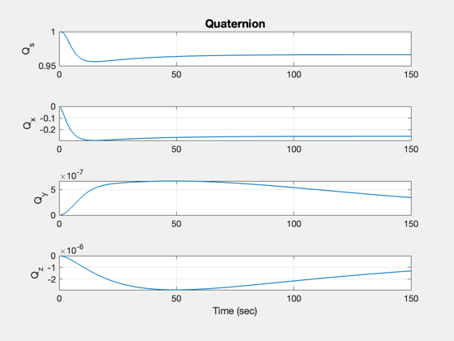 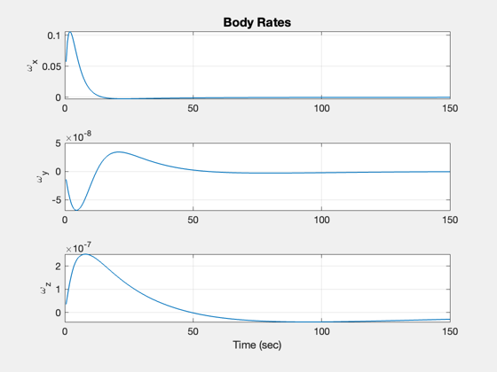 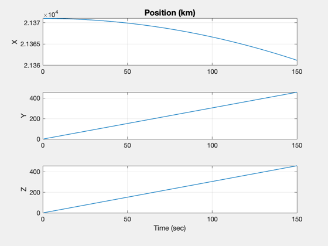 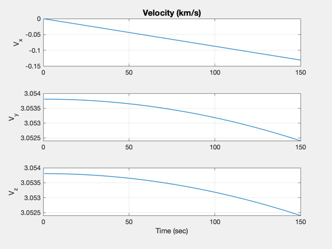 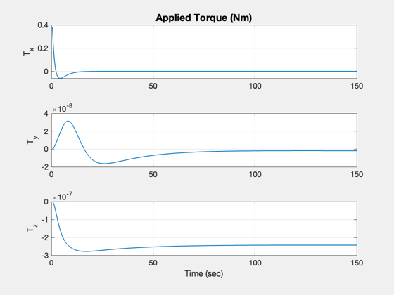